Discriminativo
Generación de Espacio Vectorial (Embeddings)
Extrae embeddings de audio con modelos pre-entrenados y los usa para analizar estructura musical: matrices de auto-similitud, recurrencia y detección de secciones.
Qué es
El proceso de generar representaciones vectoriales de audio usando modelos SSL pre-entrenados (como MuQ) y analizar su estructura temporal. Los embeddings capturan información musical que permite descubrir la forma de una pieza.
Pipeline de análisis
- Se descarga o carga un audio (WAV 16kHz mono)
- Se pasa por un modelo pre-entrenado (MuQ) para obtener embeddings por frame
- Se calcula la matriz de auto-similitud coseno entre todos los frames
- Se construye la recurrence matrix (k-NN binarizada, librosa)
- Agglomerative clustering detecta secciones musicales (verso, estribillo, puente…)
- La curva de novedad muestra cambios: picos = transiciones de sección
Qué revela
- La diagonal principal = auto-similitud (siempre alta)
- Bloques fuera de la diagonal = secciones que se repiten (forma ABA, AABB…)
- La curva de novedad marca transiciones entre secciones
📊 Demo: Análisis con MERT (auto-similitud + recurrencia)
Audio: Jazz snippet (60s) · Modelo: MERT-v1-95M (capa 7 de 13) · Features: 4499 frames × 768 dims
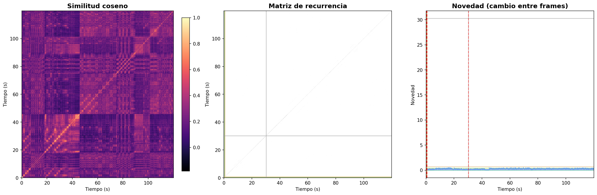

🎹 Matrices de recurrencia por capa — Mozart K.525 (MuQ)
Audio: Mozart — Sinfonía N.º 25 · Modelo: MuQ (13 capas) · Cada capa revela distintos niveles de estructura musical.
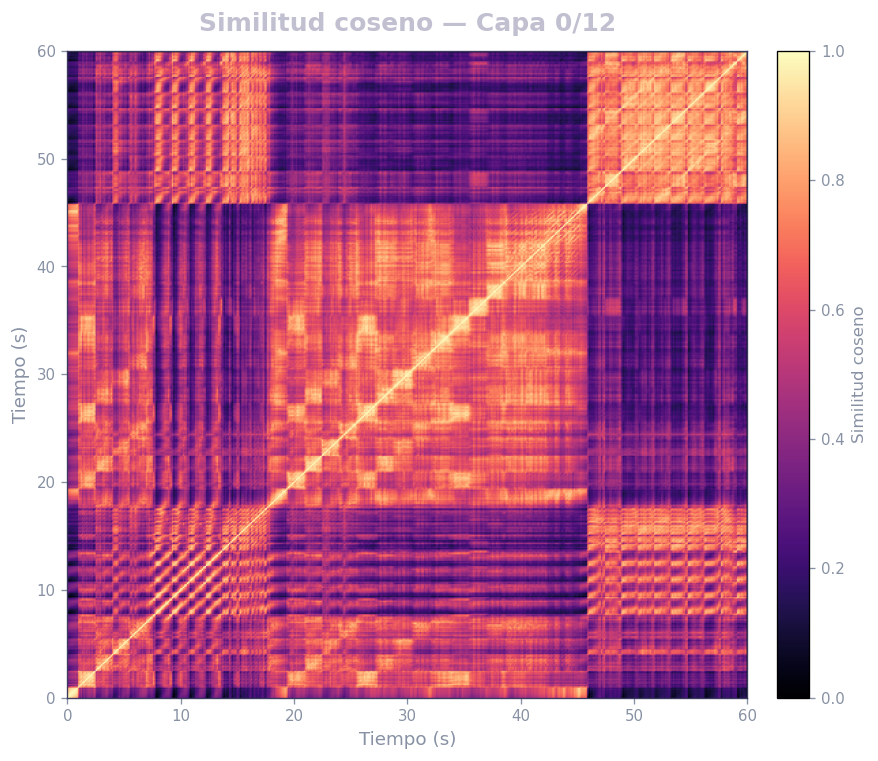
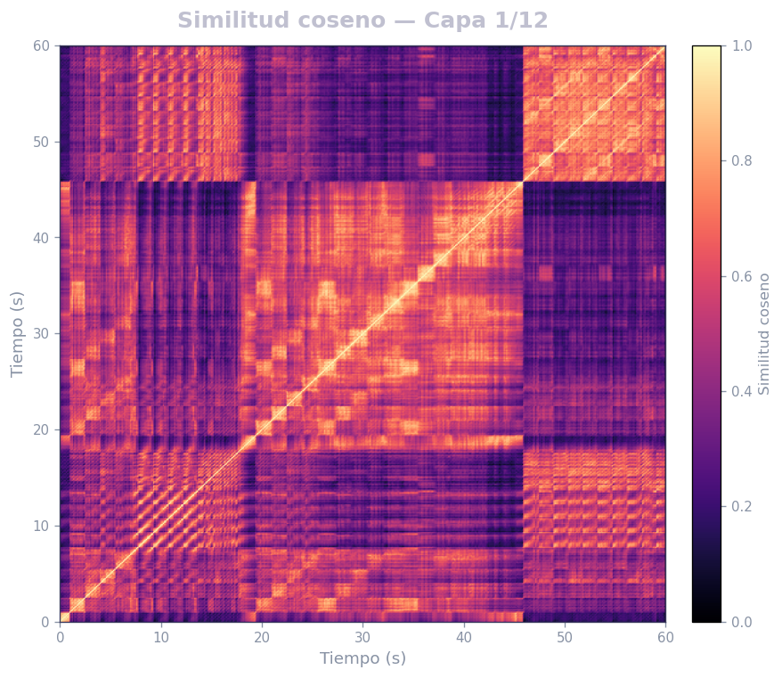
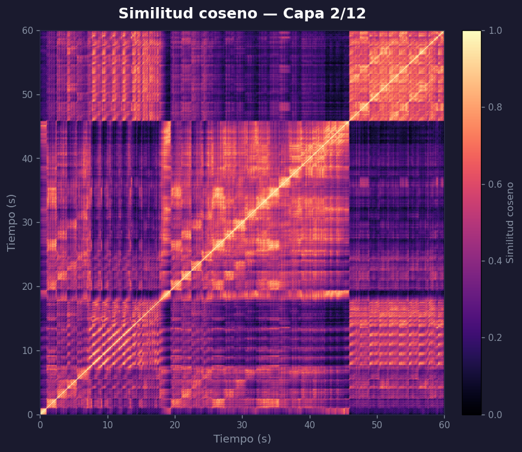
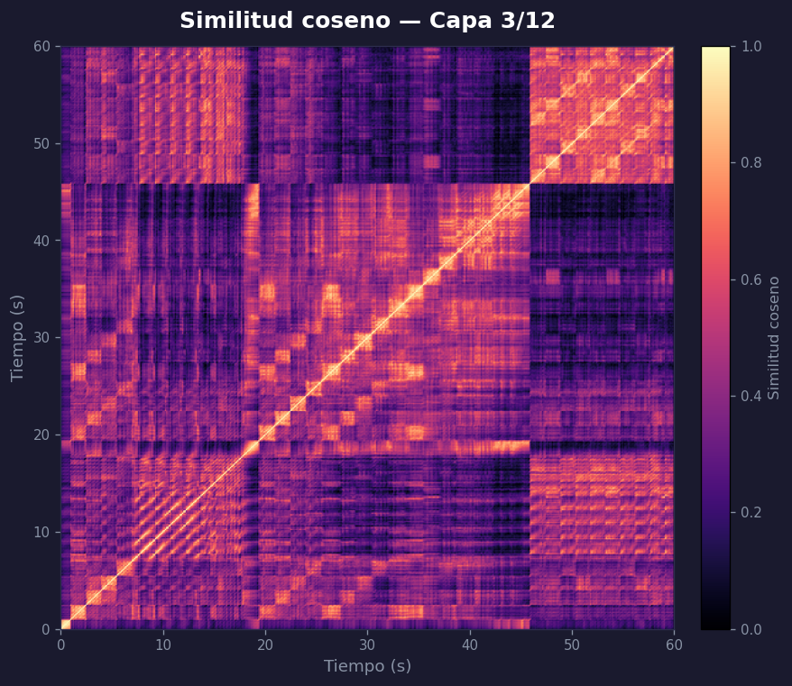
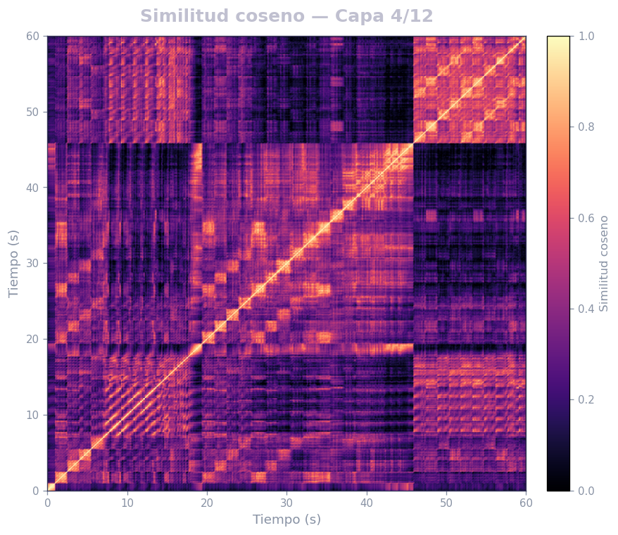
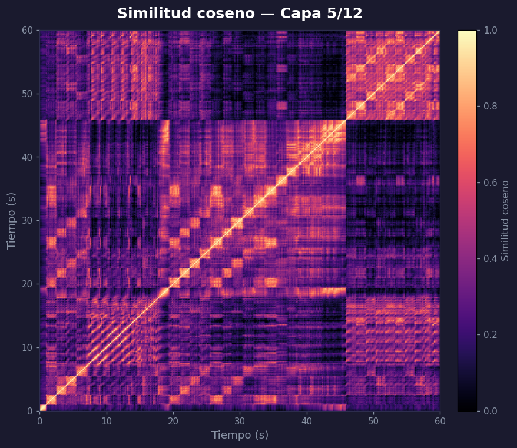
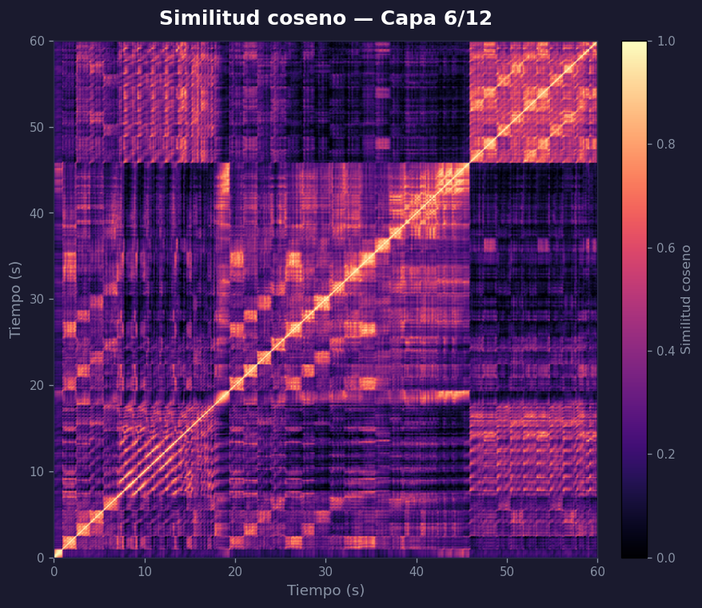
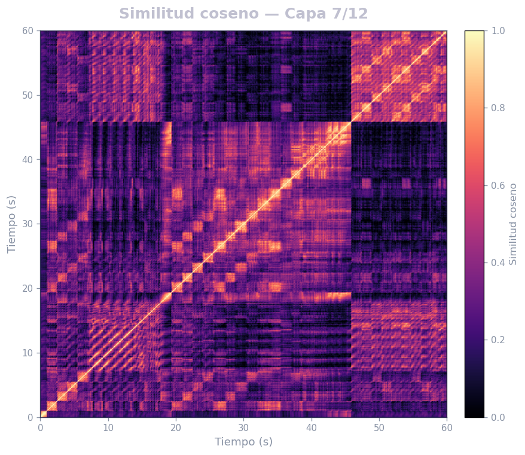
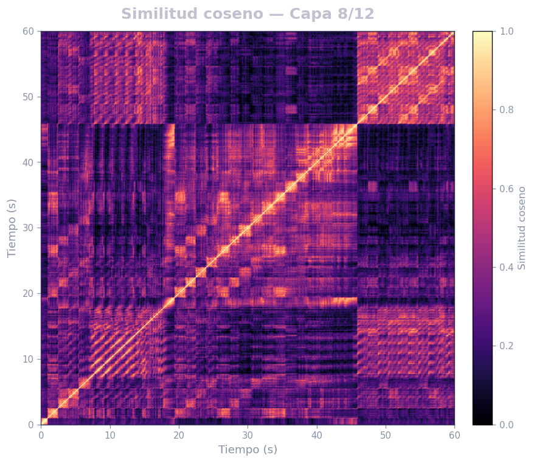
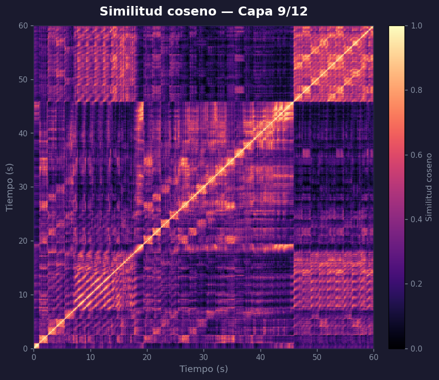
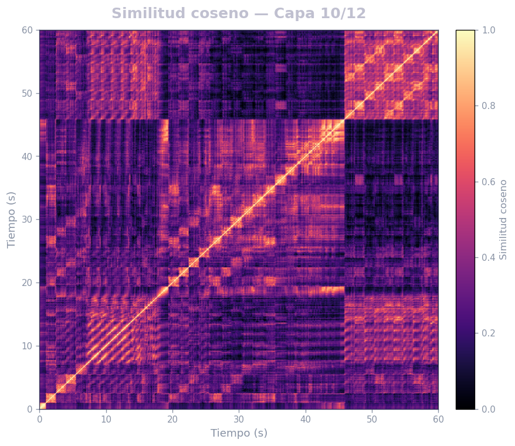
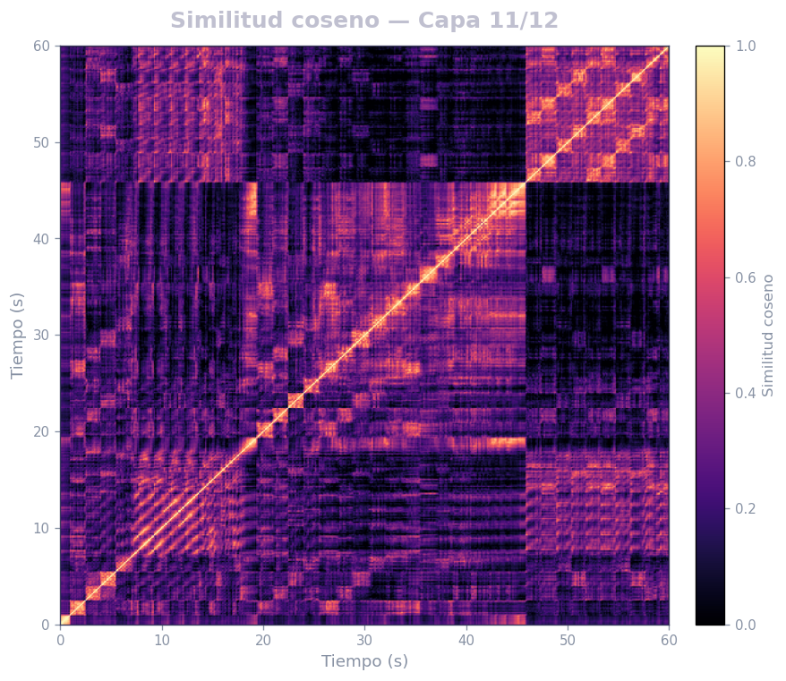
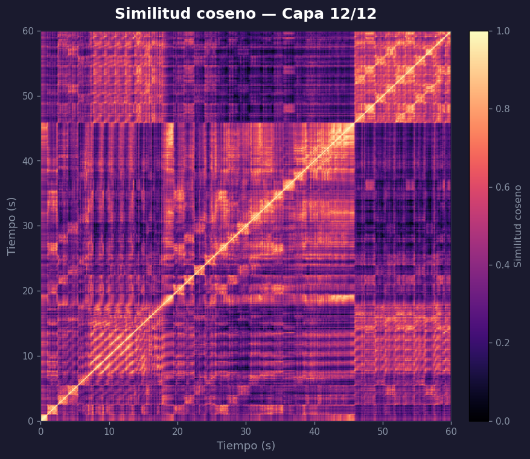
Capa 0 / 12 — acústica